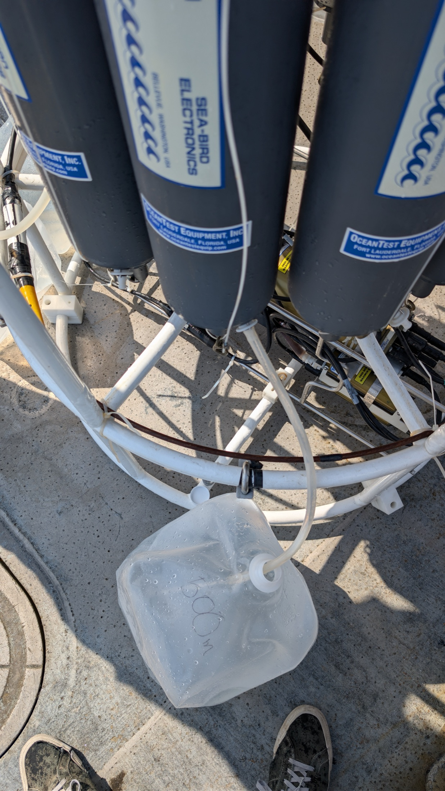
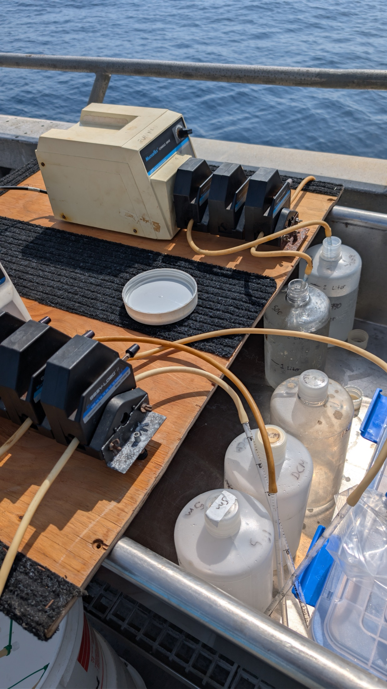

Another sunny summer day out at SPOT this week! Everything ran smoothly, and we were treated to a display of dolphins jumping and diving through the waves on our return to port.
Filtration now takes a little longer since we learned that a high RPM on the peristaltic pump can create too much pressure for the Sterivex filter and perhaps cause it to rupture. This may also be caused by filtering too much water through a Sterivex, as its maximum load is 2 L. In one of our projects, we noted many prokaryotes that we would expect to be larger than 0.22 µm in our Anotop filters, which are there to collect viruses. Nevertheless, we took two pumps, and all the water was filtered before we arrived back at port.
A curious Prochlorococcus issue
This week, I am running tests and tweaking our eASV pipeline to retain more Prochlorococcus ASVs. I re-ran some NCOG data for a colleague using our pipeline, and we noticed that, when comparing the two datasets, ours had fewer unique Prochlorococcus ASVs. I will be tinkering with maxEE, trim lengths, and the chimera-removal algorithm to determine the source of the issue. Stay tuned!





